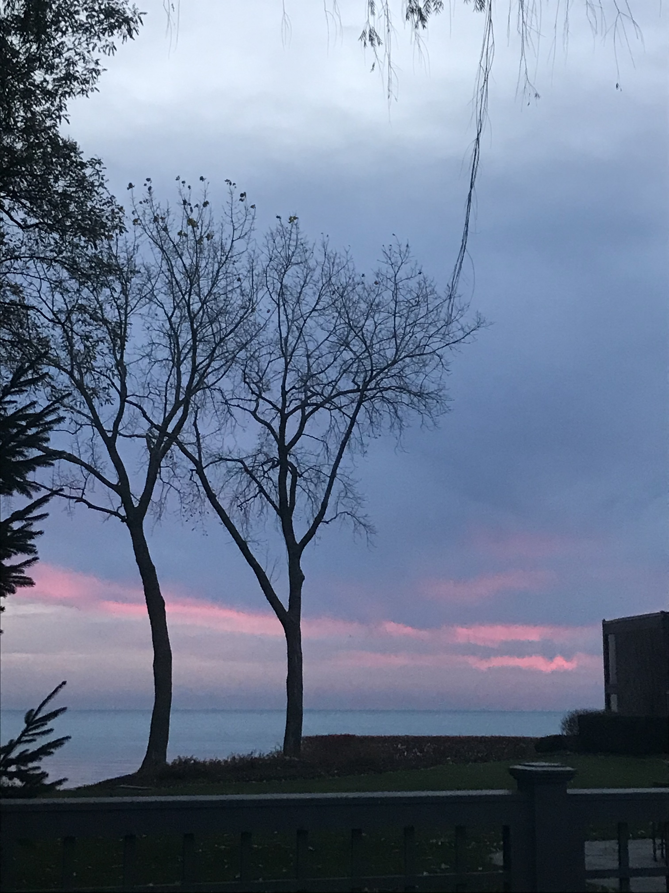
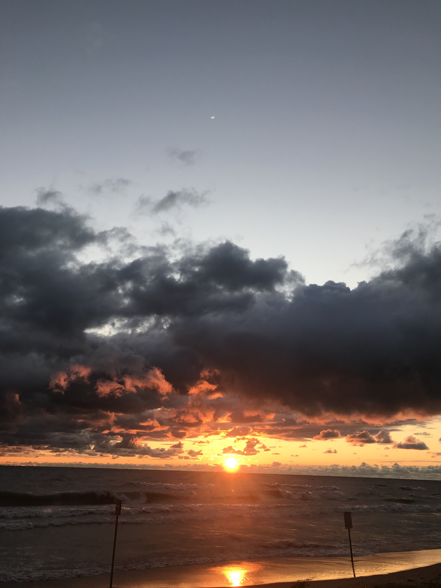
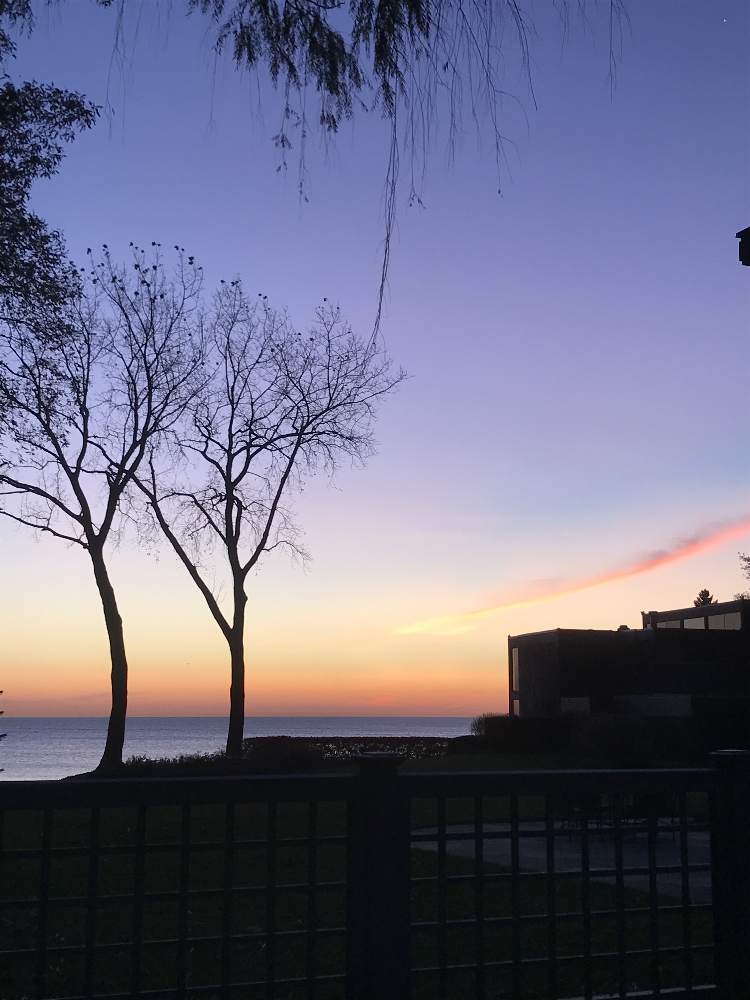
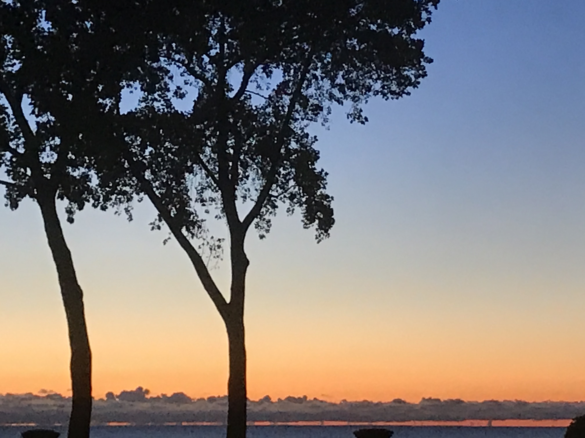

I am a sixth year Ph.D. student in math at Northwestern University. As an undergraduate, I studied math and actuarial science at the University of Notre Dame. Generally, my mathematical interests are in semiclassical analysis.
We construct a unitary operator between Hilbert spaces of generalized eigenfunctions of Coulomb operators and the Laplace-Beltrami operator of hyperbolic space that intertwines their respective Poisson operators on \(L^2(\mathbb{S}^{d-1})\). The constructed operator generalizes Fock's unitary transformation, originally defined between the discrete spectra of the attractive Coulomb operator and the Laplace-Beltrami operator on the sphere, to the setting of continuous spectra. Among other connections, this map explains why the scattering matrices are the same in these two different settings, and it also provides an explicit formula for the Poisson operator of the Coulomb Hamiltonian.
The main result of this article characterizes the set of semiclassical measures corresponding to sequences of eigenfunctions of the hydrogen atom. In particular, any Radon probability measure on the fixed negative energy surface \(\Sigma_E \) that is invariant under the Hamiltonian flow is a semiclassical measure of a sequence of eigenfunctions of hydrogen. We first prove that there is a sequence of eigenfunctions, called hydrogen coherent states, that converge to a delta measure concentrating on any given geodesic \(\gamma\) on \(\Sigma_E\), and we finish using a density argument in the weak-* topology.
The main result of this article gives scaling asymptotics of the Wigner distributions \(W_{\varphi_N^{\gamma},\varphi_N^{\gamma}}\)
of isotropic harmonic oscillator orbital coherent states \(\varphi_N^{\gamma}\)
concentrating along Hamiltonian orbits \(\gamma\) in shrinking tubes around \(\gamma\) in phase space. In particular, these Wigner distributions exhibit a hybrid semi-classical scaling. That is, simultaneously, we have an Airy scaling when the tube has radius \(N^{-2/3}\)
normal to the energy surface \(\Sigma_E\), and a Gaussian scaling when the tube has radius \(N^{-1/2}\)
tangent to \(\Sigma_E\).
My senior thesis was on approximating Riemann maps \(f:\Omega \to D\) with circle packings. It was based on Terrance Tao’s notes on his blog. My goal was to prove all of the exercises and give more detailed proofs/definitions where I felt needed. This project spanned from Summer 2018-Summer 2019. There is a nice proof of the Riemann mapping theorem for ring domains that doesn’t use Perron’s method or any theory of prime ends, something I could not find in the literature.
I have two older sisters, Emily Dumais and Meghan Jones, and one younger sister, Caroline Lohr. My mom, Kelly Lohr, is the best Kindergarten teacher in the world, and my dad, Brian Lohr, is the Director of Province Development for the Congregation of Holy Cross and consults in college advisory. Here is a pdf of our family cookbook
I have been into magic and card handling for most of my life. Here is some cool slow-mo stuff (sometimes it take a minute or so to load):
Over Summer and Fall 2020, I religiously woke up before 5am to go on runs twice a week. Here are some pictures I took along the way.




You scrolled down this far, so how about some quick facts:
Nick's Top 10 Mathematicians of All Time:
1. Riemann
2. Euler
3. Newton
4. Gauss
5. Weierstrass
6. Cauchy
7. Kolmogorov
8. Hilbert
9. Euclid
10. Poincaré
Favorite movies?: The Dark Knight Trilogy, Baby Driver, 1917, The Prestige, The Return of the King (one of my best friends has the riddle of Strider in elvish on his forearm), Fight Club, Revenge of the Sith
Favorite bands?: Linkin Park, Red, Coldplay, The Fray, SOAD, RATM, alt-J
Decks of cards?: Too many
Favorite video game series?: Fallout, Dishonored, Halo, Bioshock, Dark Souls
Favorite sports to watch?: MMA and Football
Favorite fighter?: MMA: Dustin Poirier, Boxing: Gennady Golovkin
Magic the Gathering?: Hahahaha, I don't play that nerdy game........I have ~6 commander decks